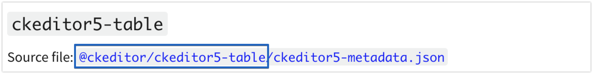

Optimizing build size
By default, the CKEditor 5 packages are well-optimized. Most of the code is tree-shakeable, meaning that most unused (or “dead”) code is removed during the build process. However, there are additional steps you can take to further optimize the build size, as the default installation methods were designed to be as developer-friendly as possible, not necessarily to produce the smallest possible build.
The build size optimization is only possible when using the npm build and module bundler. The CDN build cannot be optimized this way, as it is intended to include all plugins, features, and styles.
To optimize the build size, you only need to make a few changes to the way you import the editor, styles, and optionally the translations, compared to what was shown in the Quick start guide. You do not need to change anything in the editor configuration or in the way you use the editor.
The first step in optimizing build size is to import only the editor features you need, as adding more plugins to the editor configuration will increase build size.
The next step is to change the way you import the editor features. Currently, you are probably importing them from the following packages:
import { /* ... */ } from 'ckeditor5';
import { /* ... */ } from 'ckeditor5-premium-features';These two packages export all the editor features, and most are tree-shakeable. However, some code may be added to the build even if it is not used. To ensure that the unused code is not imported, you can import the editor features directly from the packages that contain them.
For example, if you are using the classic editor type with the bold, italic, and table features, you can change the imports like this:
- import { ClassicEditor, Bold, Italic and Table } from 'ckeditor5';
+ import { ClassicEditor } from '@ckeditor/ckeditor5-editor-classic/dist/index.js';
+ import { Bold, Italic } from '@ckeditor/ckeditor5-basic-styles/dist/index.js';
+ import { Table } from '@ckeditor/ckeditor5-table/dist/index.js';Note the /dist/index.js part of the import paths. This is important to ensure that the editor functions are imported from the correct files.
To find the correct package names, go to the plugins and HTML output guide, find the plugin name and get the file path shown under the package name.

Alternatively, if you are using an IDE with TypeScript support, you can use the Go to Definition feature to find the package names.
Currently, you probably import one or both of the following style sheets, depending on whether or not you use the premium features:
import 'ckeditor5/ckeditor5.css';
import 'ckeditor5-premium-features/ckeditor5-premium-features.css';Such imports are neat because they are easily readable and easy to follow. However, these style sheets contain all the styles for all the plugins and features. If you want to reduce the build size, you can import only the core styles alongside the styles for used plugins.
First, import the core styles. They are all needed for the editor to work properly, and the order of the imports matters, so make sure to import them in the following order:
// Import the core styles.
import '@ckeditor/ckeditor5-ui/dist/index.css';
import '@ckeditor/ckeditor5-clipboard/dist/index.css';
import '@ckeditor/ckeditor5-core/dist/index.css';
import '@ckeditor/ckeditor5-engine/dist/index.css';
import '@ckeditor/ckeditor5-enter/dist/index.css';
import '@ckeditor/ckeditor5-paragraph/dist/index.css';
import '@ckeditor/ckeditor5-select-all/dist/index.css';
import '@ckeditor/ckeditor5-typing/dist/index.css';
import '@ckeditor/ckeditor5-undo/dist/index.css';
import '@ckeditor/ckeditor5-upload/dist/index.css';
import '@ckeditor/ckeditor5-utils/dist/index.css';
import '@ckeditor/ckeditor5-widget/dist/index.css';Then, import the styles for the plugins that you use. For example, if you use the bold, italic, and table features, you can import just the styles for those features:
// Import the styles for the features that you use.
import '@ckeditor/ckeditor5-basic-styles/dist/index.css';
import '@ckeditor/ckeditor5-table/dist/index.css';
// ...Regarding plugin styles, the rule of thumb is to import the styles from all the individual packages from which you import the editor features. For example, if you import the bold feature from @ckeditor/ckeditor5-basic-styles/dist/index.js, you should also import @ckeditor/ckeditor5-basic-styles/dist/index.css.
You may notice that some plugin style sheets are empty. This is intentional, as some plugins do not have styles now but may have them in the future. Adding the imports now will ensure that you do not accidentally miss some styles if this happens. Importing empty style sheets does not increase the build size.
If you use separate editor and content styles, as described in the Content styles guide, you can still add -content and -editor suffixes to the style paths:
// All styles
import '@ckeditor/ckeditor5-clipboard/dist/index.css';
// Content styles
import '@ckeditor/ckeditor5-clipboard/dist/index-content.css';
// Editor styles
import '@ckeditor/ckeditor5-clipboard/dist/index-editor.css';By default, the editor comes with American English translations, so if you use it, you do not need to import any additional translations, thus reducing the size of the build.
However, if you need to support other languages, the Setting the UI language guide shows how to import additional translations.
For example, if you need to support Polish, you can import the Polish translations like this:
import coreTranslations from 'ckeditor5/translations/pl.js';
import premiumFeaturesTranslations from 'ckeditor5-premium-features/translations/pl.js';However, similarly to the styles, these files contain translations for all plugins and features. If you want to reduce the build size, you can import just the core translations and the translations for the plugins you use.
First, import the core translations. They are all needed for the editor to work properly:
// Import the core translations.
import clipboardTranslations from '@ckeditor/ckeditor5-clipboard/dist/translations/<LANGUAGE>.js';
import coreTranslations from '@ckeditor/ckeditor5-core/dist/translations/<LANGUAGE>.js';
import enterTranslations from '@ckeditor/ckeditor5-enter/dist/translations/<LANGUAGE>.js';
import selectAllTranslations from '@ckeditor/ckeditor5-select-all/dist/translations/<LANGUAGE>.js';
import uiTranslations from '@ckeditor/ckeditor5-ui/dist/translations/<LANGUAGE>.js';
import undoTranslations from '@ckeditor/ckeditor5-undo/dist/translations/<LANGUAGE>.js';
import uploadTranslations from '@ckeditor/ckeditor5-upload/dist/translations/<LANGUAGE>.js';
import widgetTranslations from '@ckeditor/ckeditor5-widget/dist/translations/<LANGUAGE>.js';Then, import the translations for the plugins that you use. For example, if you use the bold, italic and table features, you can only import the translations for those features:
// Import the translations for the features that you use.
import basicStylesTranslations from '@ckeditor/ckeditor5-basic-styles/dist/translations/<LANGUAGE>.js';
import tableTranslations from '@ckeditor/ckeditor5-table/dist/translations/<LANGUAGE>.js';As with styles, the rule of thumb is to import translations from all the individual packages from which you import the editor features. For example, if you import the bold feature from the @ckeditor/ckeditor5-basic-styles/dist/index.js package, you should also import the translations from the @ckeditor/ckeditor5-basic-styles/translations/<LANGUAGE>.js file.
Some plugins may not have translations. In such cases, you do not need to import translations for them.
Let’s see how the build size changes after applying the above optimizations to a sample project with the classic editor, free and premium features, plus Polish translations.
Code before optimization
import {
ClassicEditor,
Essentials,
CKFinderUploadAdapter,
Autoformat,
Bold,
Italic,
BlockQuote,
CKBox,
CKFinder,
Heading,
Image,
ImageCaption,
ImageStyle,
ImageToolbar,
ImageUpload,
PictureEditing,
Indent,
Link,
List,
MediaEmbed,
Paragraph,
PasteFromOffice,
Table,
TableToolbar,
TextTransformation,
CloudServices,
Mention
} from 'ckeditor5';
import { CaseChange, SlashCommand } from 'ckeditor5-premium-features';
import coreTranslations from 'ckeditor5/translations/pl.js';
import commercialTranslations from 'ckeditor5-premium-features/translations/pl.js';
import 'ckeditor5/ckeditor5.css';
import 'ckeditor5-premium-features/ckeditor5-premium-features.css';
ClassicEditor.create( {
attachTo: document.querySelector( '#editor' ),
plugins: [
Essentials,
CKFinderUploadAdapter,
Autoformat,
Bold,
Italic,
BlockQuote,
CKBox,
CKFinder,
CloudServices,
Heading,
Image,
ImageCaption,
ImageStyle,
ImageToolbar,
ImageUpload,
Indent,
Link,
List,
MediaEmbed,
Paragraph,
PasteFromOffice,
PictureEditing,
Table,
TableToolbar,
TextTransformation,
Mention,
CaseChange,
SlashCommand
],
licenseKey: '<YOUR_LICENSE_KEY>', // Replace this with your license key.
toolbar: {
items: [
'undo', 'redo',
'|', 'heading',
'|', 'bold', 'italic',
'|', 'link', 'uploadImage', 'insertTable', 'blockQuote', 'mediaEmbed',
'|', 'bulletedList', 'numberedList', 'outdent', 'indent', 'caseChange'
]
},
image: {
toolbar: [
'imageStyle:inline',
'imageStyle:block',
'imageStyle:side',
'|',
'toggleImageCaption',
'imageTextAlternative'
]
},
table: {
contentToolbar: [
'tableColumn',
'tableRow',
'mergeTableCells'
]
},
translations: [
coreTranslations,
commercialTranslations
],
language: 'pl'
} );Code after optimization
import { ClassicEditor } from '@ckeditor/ckeditor5-editor-classic/dist/index.js';
import { Essentials } from '@ckeditor/ckeditor5-essentials/dist/index.js';
import { CKFinderUploadAdapter } from '@ckeditor/ckeditor5-adapter-ckfinder/dist/index.js';
import { Autoformat } from '@ckeditor/ckeditor5-autoformat/dist/index.js';
import { Bold, Italic } from '@ckeditor/ckeditor5-basic-styles/dist/index.js';
import { BlockQuote } from '@ckeditor/ckeditor5-block-quote/dist/index.js';
import { CKBox } from '@ckeditor/ckeditor5-ckbox/dist/index.js';
import { CKFinder } from '@ckeditor/ckeditor5-ckfinder/dist/index.js';
import { CloudServices } from '@ckeditor/ckeditor5-cloud-services/dist/index.js';
import { Heading } from '@ckeditor/ckeditor5-heading/dist/index.js';
import { Image, ImageCaption, ImageStyle, ImageToolbar, ImageUpload, PictureEditing } from '@ckeditor/ckeditor5-image/dist/index.js';
import { Indent } from '@ckeditor/ckeditor5-indent/dist/index.js';
import { Link } from '@ckeditor/ckeditor5-link/dist/index.js';
import { List } from '@ckeditor/ckeditor5-list/dist/index.js';
import { MediaEmbed } from '@ckeditor/ckeditor5-media-embed/dist/index.js';
import { Paragraph } from '@ckeditor/ckeditor5-paragraph/dist/index.js';
import { PasteFromOffice } from '@ckeditor/ckeditor5-paste-from-office/dist/index.js';
import { Table, TableToolbar } from '@ckeditor/ckeditor5-table/dist/index.js';
import { TextTransformation } from '@ckeditor/ckeditor5-typing/dist/index.js';
import { Mention } from '@ckeditor/ckeditor5-mention/dist/index.js';
import { CaseChange } from '@ckeditor/ckeditor5-case-change/dist/index.js';
import { SlashCommand } from '@ckeditor/ckeditor5-slash-command/dist/index.js';
import clipboardTranslations from '@ckeditor/ckeditor5-clipboard/dist/translations/pl.js';
import coreTranslations from '@ckeditor/ckeditor5-core/dist/translations/pl.js';
import enterTranslations from '@ckeditor/ckeditor5-enter/dist/translations/pl.js';
import selectAllTranslations from '@ckeditor/ckeditor5-select-all/dist/translations/pl.js';
import uiTranslations from '@ckeditor/ckeditor5-ui/dist/translations/pl.js';
import undoTranslations from '@ckeditor/ckeditor5-undo/dist/translations/pl.js';
import uploadTranslations from '@ckeditor/ckeditor5-upload/dist/translations/pl.js';
import widgetTranslations from '@ckeditor/ckeditor5-widget/dist/translations/pl.js';
import autoformatTranslations from '@ckeditor/ckeditor5-autoformat/dist/translations/pl.js';
import basicStylesTranslations from '@ckeditor/ckeditor5-basic-styles/dist/translations/pl.js';
import blockQuoteTranslations from '@ckeditor/ckeditor5-block-quote/dist/translations/pl.js';
import ckboxTranslations from '@ckeditor/ckeditor5-ckbox/dist/translations/pl.js';
import ckfinderTranslations from '@ckeditor/ckeditor5-ckfinder/dist/translations/pl.js';
import headingTranslations from '@ckeditor/ckeditor5-heading/dist/translations/pl.js';
import imageTranslations from '@ckeditor/ckeditor5-image/dist/translations/pl.js';
import indentTranslations from '@ckeditor/ckeditor5-indent/dist/translations/pl.js';
import linkTranslations from '@ckeditor/ckeditor5-link/dist/translations/pl.js';
import listTranslations from '@ckeditor/ckeditor5-list/dist/translations/pl.js';
import mediaEmbedTranslations from '@ckeditor/ckeditor5-media-embed/dist/translations/pl.js';
import tableTranslations from '@ckeditor/ckeditor5-table/dist/translations/pl.js';
import caseChangeTranslations from '@ckeditor/ckeditor5-case-change/dist/translations/pl.js';
import slashCommandTranslations from '@ckeditor/ckeditor5-slash-command/dist/translations/pl.js';
import '@ckeditor/ckeditor5-clipboard/dist/index.css';
import '@ckeditor/ckeditor5-core/dist/index.css';
import '@ckeditor/ckeditor5-engine/dist/index.css';
import '@ckeditor/ckeditor5-enter/dist/index.css';
import '@ckeditor/ckeditor5-paragraph/dist/index.css';
import '@ckeditor/ckeditor5-select-all/dist/index.css';
import '@ckeditor/ckeditor5-typing/dist/index.css';
import '@ckeditor/ckeditor5-ui/dist/index.css';
import '@ckeditor/ckeditor5-undo/dist/index.css';
import '@ckeditor/ckeditor5-upload/dist/index.css';
import '@ckeditor/ckeditor5-utils/dist/index.css';
import '@ckeditor/ckeditor5-widget/dist/index.css';
import '@ckeditor/ckeditor5-editor-classic/dist/index.css';
import '@ckeditor/ckeditor5-essentials/dist/index.css';
import '@ckeditor/ckeditor5-adapter-ckfinder/dist/index.css';
import '@ckeditor/ckeditor5-autoformat/dist/index.css';
import '@ckeditor/ckeditor5-basic-styles/dist/index.css';
import '@ckeditor/ckeditor5-block-quote/dist/index.css';
import '@ckeditor/ckeditor5-ckbox/dist/index.css';
import '@ckeditor/ckeditor5-ckfinder/dist/index.css';
import '@ckeditor/ckeditor5-cloud-services/dist/index.css';
import '@ckeditor/ckeditor5-heading/dist/index.css';
import '@ckeditor/ckeditor5-image/dist/index.css';
import '@ckeditor/ckeditor5-indent/dist/index.css';
import '@ckeditor/ckeditor5-link/dist/index.css';
import '@ckeditor/ckeditor5-list/dist/index.css';
import '@ckeditor/ckeditor5-media-embed/dist/index.css';
import '@ckeditor/ckeditor5-paste-from-office/dist/index.css';
import '@ckeditor/ckeditor5-table/dist/index.css';
import '@ckeditor/ckeditor5-mention/dist/index.css';
import '@ckeditor/ckeditor5-case-change/dist/index.css';
import '@ckeditor/ckeditor5-slash-command/dist/index.css';
ClassicEditor.create( {
attachTo: document.querySelector( '#editor' ),
plugins: [
Essentials,
CKFinderUploadAdapter,
Autoformat,
Bold,
Italic,
BlockQuote,
CKBox,
CKFinder,
CloudServices,
Heading,
Image,
ImageCaption,
ImageStyle,
ImageToolbar,
ImageUpload,
Indent,
Link,
List,
MediaEmbed,
Paragraph,
PasteFromOffice,
PictureEditing,
Table,
TableToolbar,
TextTransformation,
Mention,
CaseChange,
SlashCommand
],
licenseKey: '<YOUR_LICENSE_KEY>', // Replace this with your license key.
toolbar: {
items: [
'undo', 'redo',
'|', 'heading',
'|', 'bold', 'italic',
'|', 'link', 'uploadImage', 'insertTable', 'blockQuote', 'mediaEmbed',
'|', 'bulletedList', 'numberedList', 'outdent', 'indent', 'caseChange'
]
},
image: {
toolbar: [
'imageStyle:inline',
'imageStyle:block',
'imageStyle:side',
'|',
'toggleImageCaption',
'imageTextAlternative'
]
},
table: {
contentToolbar: [
'tableColumn',
'tableRow',
'mergeTableCells'
]
},
translations: [
clipboardTranslations,
coreTranslations,
enterTranslations,
selectAllTranslations,
uiTranslations,
undoTranslations,
uploadTranslations,
widgetTranslations,
autoformatTranslations,
basicStylesTranslations,
blockQuoteTranslations,
ckboxTranslations,
ckfinderTranslations,
headingTranslations,
imageTranslations,
indentTranslations,
linkTranslations,
listTranslations,
mediaEmbedTranslations,
tableTranslations,
caseChangeTranslations,
slashCommandTranslations,
],
language: 'pl'
} );The build size of the project before and after the optimizations is as follows:
| Before optimization | After optimization | Improvement | |
|---|---|---|---|
| JavaScript gzipped | 269.18 kB | 257.31 kB | -4.41% |
| CSS gzipped | 64.98 kB | 30.80 kB | -52.60% |
Thanks to the above optimizations, we were able to reduce the total build size (JavaScript + CSS) by 46,05 kB gzipped, which in effect gives us ~85% of the original size. These results will vary depending on the editor features and bundler you use.